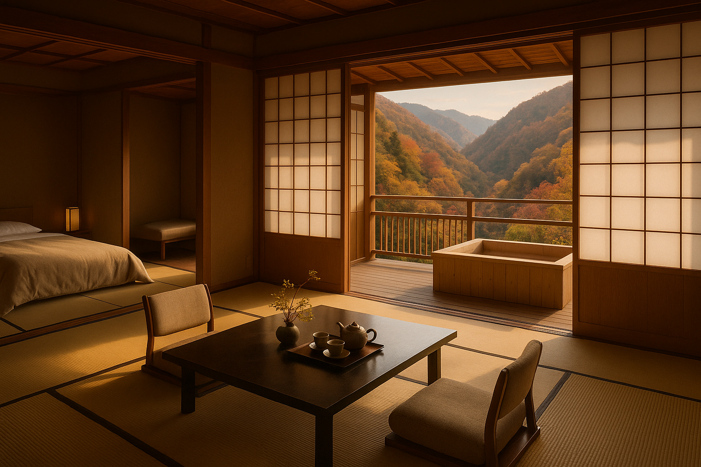
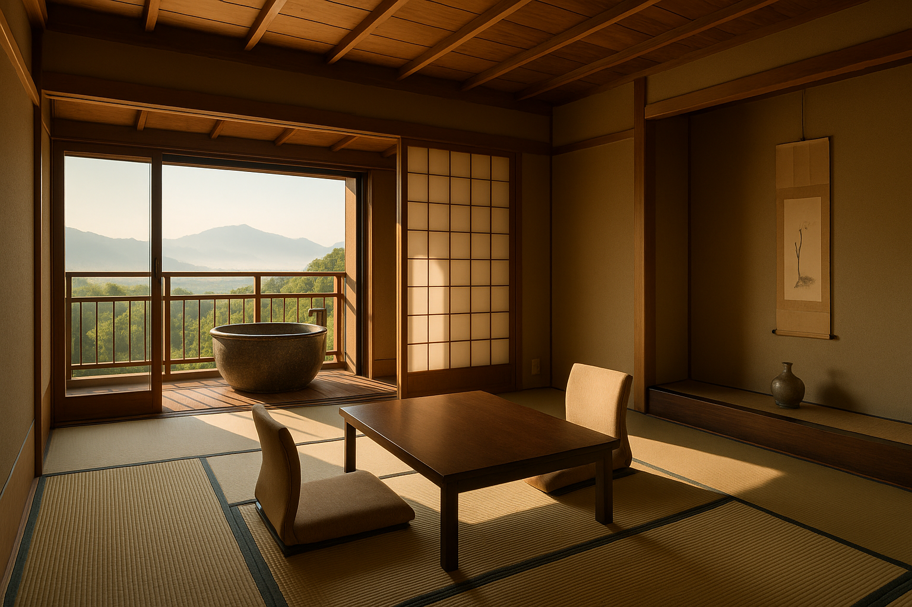
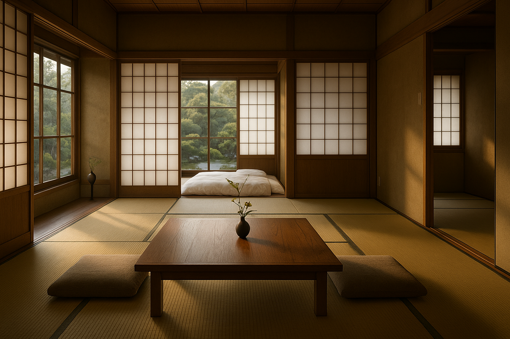

特別室 ／ Premier Suite
望月Mochizuki
露天風呂付き特別室。檜風呂と十二畳の本間、四畳半の次の間。窓の向こうに渓谷の四季を望む、最上のしつらえ。
Premier suite with private hinoki cypress open-air bath, 12-mat main room and 4.5-mat anteroom, overlooking the valley.
月詠
TSUKUYOMI · est. 1923
― A hidden ryokan in the mountains of Shinshu ―
Embraced by Moonlight.
信州の山あいに、八つの灯がしずかに燈る。
渓谷を渡る風、湯けむりにほどける月。
ここでしか過ごせない、夜があります。
Eight lanterns, glowing softly in the valleys of Shinshu.
A wind through the gorge, a moon dissolving in the steam of the bath.
Some nights can only be spent here.
― Philosophy ／ こころざし
山ふところに抱かれた古き宿。創業より百年、私どもは「一夜に、一生の静けさを」という想いひとつで、暖簾を守り続けてまいりました。
For a century since our founding, we have kept this old inn alive with a single wish: to offer, in a single night, the stillness of a lifetime.
飾り立てぬしつらえ、地の素材だけで仕立てる会席、源泉かけ流しの湯。それは贅を尽くすことではなく、ただ一夜、お客様の時間を澄ませるためのもの。
Unadorned interiors, kaiseki crafted only from the bounty of these mountains, and natural hot spring water flowing freely from the source — none of it is luxury for its own sake. It exists only to clarify the hours of your stay.
日が落ちて、月が湯に映るころ。どうぞ、すべてを置いて、お越しください。
― Guest Rooms ／ 客室のしつらえ
— Eight rooms, each named after a phase of the moon —
全八室、すべてに異なる景色を。露天風呂付き特別室から、本間と次の間を備えた本格和室まで。
いずれの部屋も、一棟一棟に名月の名を冠しております。

特別室 ／ Premier Suite
露天風呂付き特別室。檜風呂と十二畳の本間、四畳半の次の間。窓の向こうに渓谷の四季を望む、最上のしつらえ。
Premier suite with private hinoki cypress open-air bath, 12-mat main room and 4.5-mat anteroom, overlooking the valley.

上級和室 ／ Deluxe
十畳の本間に半露天の信楽焼陶器風呂を備えた角部屋。月の出を寝そべったまま望めるよう、東向きに設えました。
East-facing corner room, 10-mat main with semi-outdoor Shigaraki ceramic bath. Watch the moonrise from your futon.

本間和室 ／ Standard
八畳の本間と縁側。庭の灯籠を独り占めにする、もっとも静かな一室。お一人様にも好まれます。
An 8-mat room with engawa veranda, overlooking a stone lantern in the garden. The quietest room — favored by solo travelers.
― Kaiseki ／ お料理
— A Kaiseki Beneath the Moon —
信州の山菜、戸隠の蕎麦、安曇野の岩魚。料理長 久保田は、地のものだけで一献の月を仕立てます。
Mountain herbs of Shinshu, Togakushi soba, char from Azumino. Chef Kubota composes each course only from what these mountains and rivers offer.
献立はその日の朝、料理長が市場と山を歩いて決めるため、二度として同じものはございません。
― Onsen ／ 温泉
— The Moon, Reflected in the Bath —
源泉かけ流しの単純硫黄泉。檜の内湯と石組みの露天、貸切風呂を二つ。
夜更けの湯に映る、ひと刷毛の月をどうぞ。
Free-flowing simple sulfur spring, drawn directly from the source.
An indoor hinoki bath, a stone-rimmed open-air bath, and two private baths await.
― The Four Seasons ／ 四季の景色
— Garden, and the Turning Seasons —
季節をお選びください。当館の庭は、四季のしらべに合わせて、その装いを変えてまいります。
Choose a season — our garden wears a different gown for each.
秋 ／ Autumn
山眠る前の
ひと刷毛の朱、
湯にゆれる。
十月から十一月、当館の庭は紅葉の盛り。露天風呂のすぐ横まで枝を伸ばす楓が、湯面に朱を落とします。
October through November — maples reach to the very edge of the open-air bath, casting crimson onto the water.
― Reservation ／ ご予約
— Reserve Your Stay —
ご宿泊の希望日をお選びください。当館より折り返しご連絡を差し上げます。
Please select your preferred dates. We will contact you to confirm.
月詠の夜空
日付をお選びください
※ こちらはポートフォリオデモであり、実際の予約は承っておりません ／ This is a portfolio demo. No actual reservations are processed.